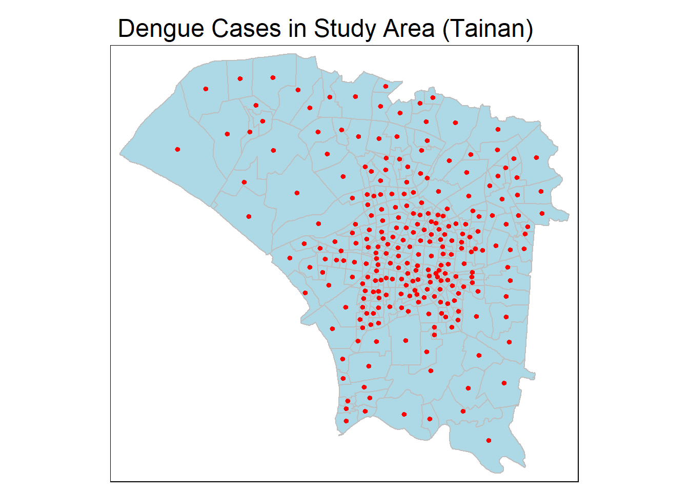
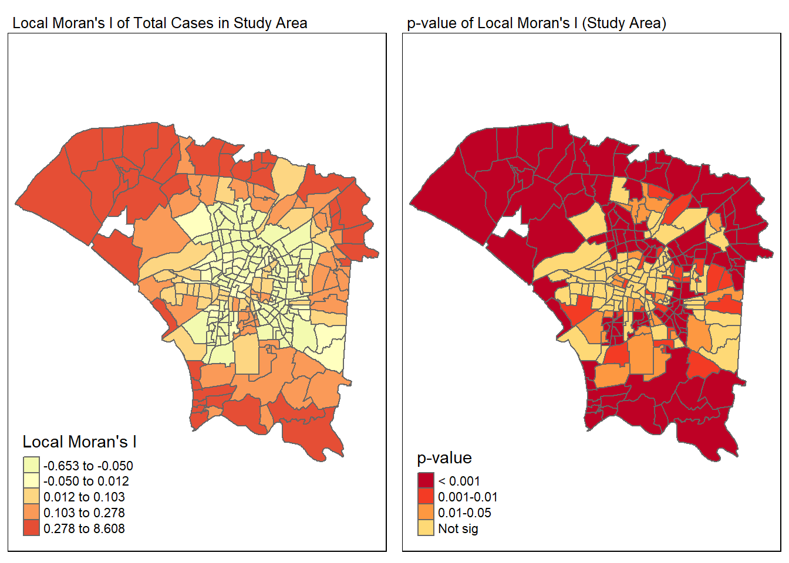
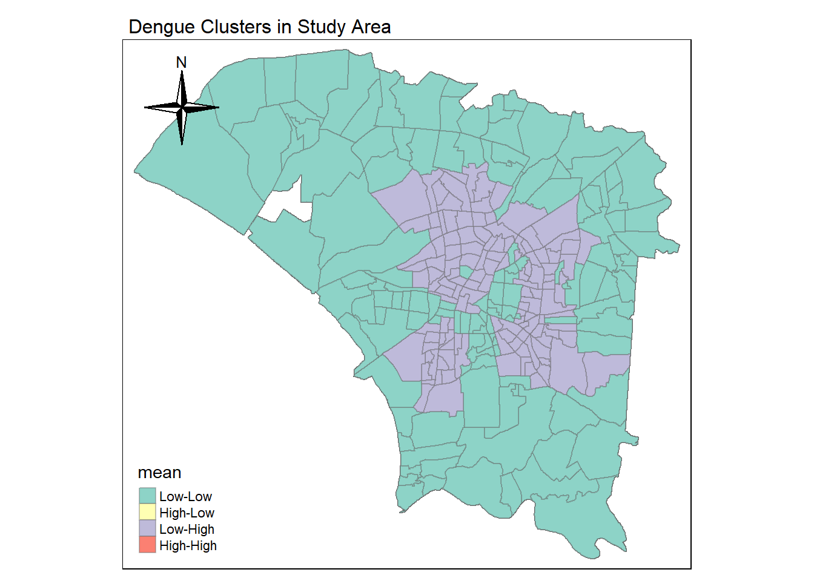
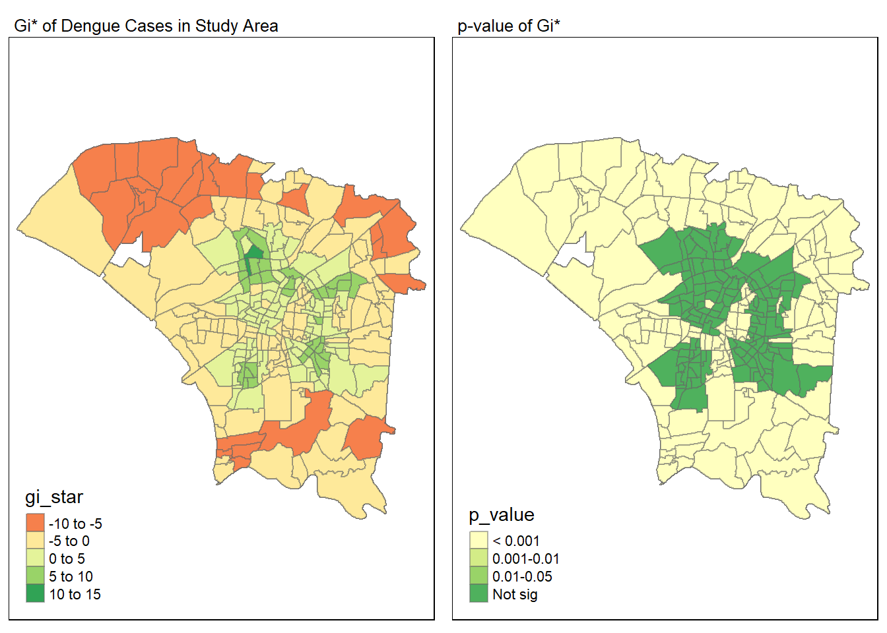
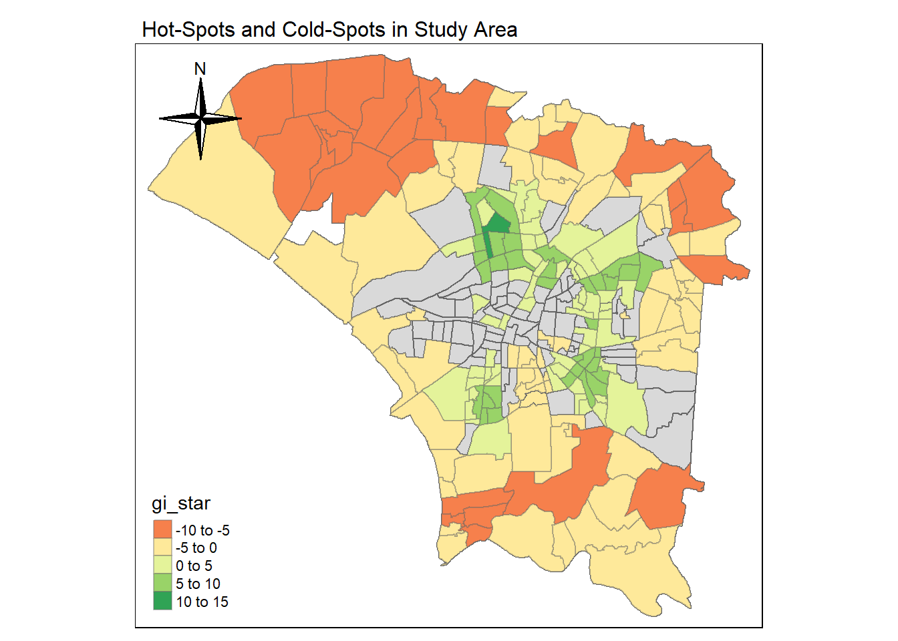
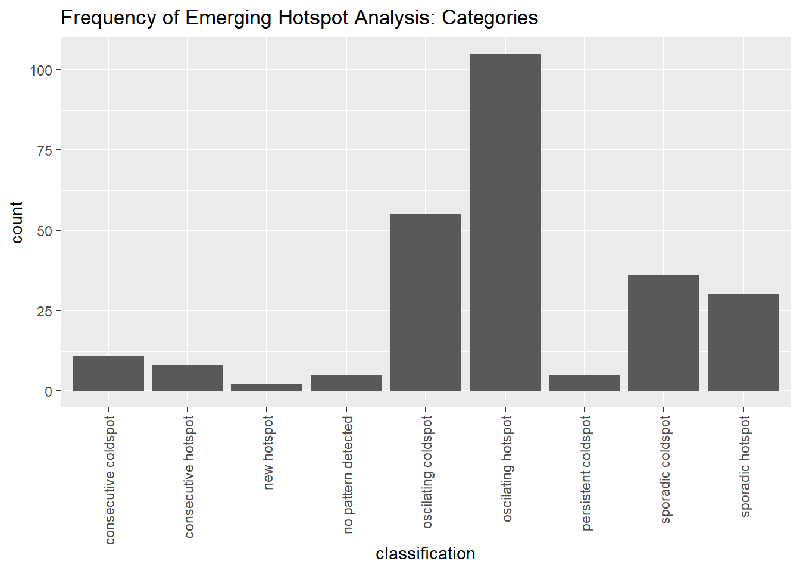
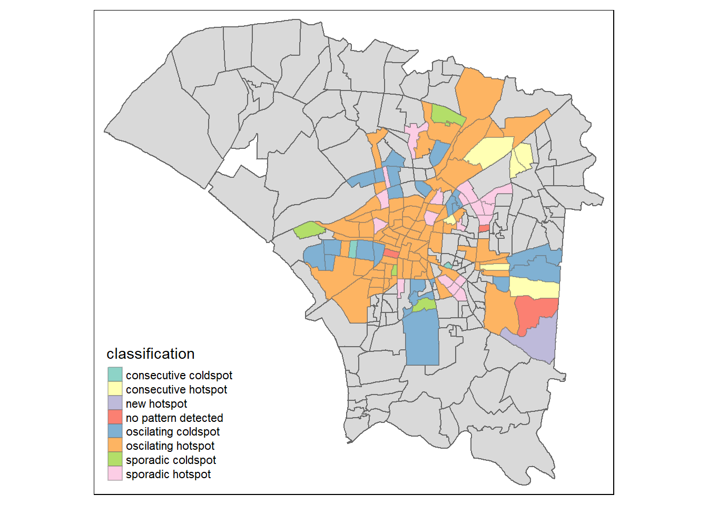

#|eval: False
pacman::p_load(sf, sp, spdep, sfdep, tmap, tidyverse, knitr, tibble, dplyr, lubridate, spacetime, stars, plotly)Take-home_Ex02
Installing relevant R packages
Importing and preparing data
Importing and Filtering Geospatial Data (TAINAN_VILLAGE.shp)
Importing the Taiwan shapefile
Taiwan_mpsz <- st_read(dsn ="data/geospatial/TAINAN_VILLAGE.shp")Reading layer `TAINAN_VILLAGE' from data source
`D:\Kabeer2003\IS415 - GAA\Take-home_Ex\Take-home_Ex02\data\geospatial\TAINAN_VILLAGE.shp'
using driver `ESRI Shapefile'
Simple feature collection with 649 features and 10 fields
Geometry type: POLYGON
Dimension: XY
Bounding box: xmin: 120.0269 ymin: 22.88751 xmax: 120.6563 ymax: 23.41374
Geodetic CRS: TWD97Transforming the Coordinate Reference System from TWD97 to WGS84 to ensure that our geospatial data and aspatial data are compatible with each other. For the scope of this study, we would be using WGS84 as the coordinate reference system.
crs_info1 <- st_crs(Taiwan_mpsz)
print(crs_info1[1])$input
[1] "TWD97"Taiwan_mpsz <- st_transform(Taiwan_mpsz, crs = 4326)
crs_info1 <- st_crs(Taiwan_mpsz)
print(crs_info1[1])$input
[1] "EPSG:4326"Since the scope of our analysis is limited to the 8 regions below, we would be filtering the relevant regions using their TownID to zoom our study into specific areas of Tainan
filtered_regions_mpsz <- Taiwan_mpsz %>%
filter(TOWNID %in% c("D01", "D02", "D04", "D06", "D07", "D08", "D32", "D39"))Importing and Transforming Aspatial Data
Reading the csv file with dengue cases over a period of time from 1998 to 2024 (Our Aspatial Data)
dengue_cases <- read_csv("data/aspatial/Dengue_Daily.csv")Extracting all dengue cases in the year 2023 since we are specifically looking at dengue cases in 2023.
dengue_cases$發病日 <- as.Date(dengue_cases$發病日, format="%Y/%m/%d")
# Filter the data frame for rows where the year is 2023
dengue_cases_2023 <- dengue_cases[format(dengue_cases$發病日, "%Y") == "2023", ]Since we are supposed to filter all cases between epidemological weeks 31 and 50, we are using dplyr mutate to add a column ’number_of_weeks” which indicates the week the epidemological week at any given point in time in 2023
dengue_cases_2023_by_week <- dengue_cases_2023 %>%
mutate(number_of_weeks = isoweek(發病日))Zooming-in and filtering the dengue cases that were onset between Weeks 31 and 50 during the year 2023
dengue_cases_weeks_31_to_50 <- dengue_cases_2023_by_week %>%
filter(number_of_weeks >= 31 & number_of_weeks <= 50)Since we only require the onset date, x and y coordinates of the location where the case was reported, we would be filtering those fields out specifically
filtered_dengue_cases_coords <- dengue_cases_weeks_31_to_50 %>%
dplyr::select(發病日, 最小統計區中心點X, 最小統計區中心點Y, number_of_weeks)Removing all null values which do not have coordinates i.e. X coordinate / Y coordinate is denoted as ‘None’
filtered_dengue_cases_coords <- filtered_dengue_cases_coords %>%
filter(最小統計區中心點X != 'None', 最小統計區中心點Y != 'None')Next, we are converting the aspatial data of dengue cases to an sf_object to be able to plot these values on our TAINAN VILLAGE shapefile. The coordinates of where the case was onset would allow us to gauge which village in Tainan the case was from such that the coordinates of the dengue case onset would be plotted inside the corresponding polygon of the village.
filtered_dengue_cases_coords_sf <- st_as_sf(filtered_dengue_cases_coords, coords = c("最小統計區中心點X", "最小統計區中心點Y"), crs = 4326)Confirming that our aspatial data is following the correct Coordinate Reference System i.e. WGS84. This would enable us to ensure that both our geospatial and aspatial data are using the same coordinate reference system and thus are compatible with each other.
crs_info2 <- st_crs(filtered_dengue_cases_coords_sf)
print(crs_info2[1])$input
[1] "EPSG:4326"Joining aspatial and geospatial data to create a single object
We would now be filtering all our dengue cases confining them to our study area i.e. within TAINAN_VILLAGE.shp / our region of study
taiwan_dengue_cases_filtered <- st_join(filtered_regions_mpsz, filtered_dengue_cases_coords_sf, left = TRUE)
taiwan_dengue_cases_filtered <- taiwan_dengue_cases_filtered %>%
dplyr::select(VILLCODE, VILLNAME, VILLENG, TOWNID, 發病日, number_of_weeks, geometry)To ensure that we have correctly filtered all points, we would be plotting the onset of dengue cases on the map of our study area. Ideally, all points should fall within the blue region which ensures that all points are confined within our study area.
tmap_mode("plot")
tm_shape(filtered_regions_mpsz) +
tm_polygons(col = "lightblue", border.col = "gray") + # Plot the regions
tm_shape(taiwan_dengue_cases_filtered) +
tm_dots(col = "red", size = 0.1) +
tm_layout(main.title = "Dengue Cases in Study Area (Tainan)")
Removing all points where the number of weeks as this may hinder our analysis.
taiwan_dengue_cases_filtered <- taiwan_dengue_cases_filtered %>%
filter(!is.na(number_of_weeks))Next, we would be aggregating the dengue cases in our study area by each village and each epidemiological week to gauge the increase / decrease of Dengue cases over the period of 20 weeks. These would further allow us to check for dengue clusters, hot spots, cold spots as well as emerging / recurring hotspots over a period of time.
aggregated_dengue_cases <- taiwan_dengue_cases_filtered %>%
group_by(VILLCODE, VILLNAME, VILLENG, number_of_weeks) %>%
summarise(CASE_COUNT = n(), .groups = 'drop')To create our spacetime cube, we need to ensure that each village has a corresponding number of cases for each week, in the absence of this data, we may not be able to form a space-time cube for which we would have to complete our data.
Essentially, we have to fill all villages which did not have cases for the week with 0 to ensure the completeness of our data. We would first be finding all values which are missing and eventually replace the value with zero.
Computing all possible combinations to account for villages that did not have any cases in a particular week (20 weeks x 257 villages)
villages <- aggregated_dengue_cases %>%
distinct(VILLCODE, VILLNAME, VILLENG, geometry)
weeks <- 31:50
all_combinations <- crossing(weeks, villages) %>%
rename(number_of_weeks = weeks)We would be left-joining this data with our current aggregated data to find all those values
joined_data <- left_join(all_combinations, aggregated_dengue_cases,
by = c("VILLCODE", "VILLNAME", "VILLENG", "number_of_weeks", "geometry"))Replacing the case count in villages which had no cases onset during a particular week with zero to indicate that zero cases for the week were onset for that particular village
joined_data <- joined_data %>%
mutate(CASE_COUNT = if_else(is.na(CASE_COUNT), 0, CASE_COUNT))Since a spacetime cube needs to be able to model emerging cases against time. To enable this, we need the end date for each week which could be used as a measure of time. Consequently, an end date column which marks the end of the week to gauge the number of cases onset each week is added.
base_date <- as.Date("2023-01-02")
joined_data <- joined_data %>%
mutate(week_end_date = base_date + (number_of_weeks * 7) - 1)Aggregating the cases onset in every village per week
aggregated_dengue_cases_summary <- joined_data %>%
group_by(VILLCODE, VILLNAME, VILLENG, number_of_weeks, week_end_date, geometry) %>%
summarise(total_cases = sum(CASE_COUNT, na.rm = TRUE), .groups = 'drop')We would now be arranging the dengue cases onset in ascending order by time
aggregated_dengue_cases_summary$week_end_date <- as.Date(aggregated_dengue_cases_summary$week_end_date)
aggregated_dengue_cases_summary <- aggregated_dengue_cases_summary %>%
arrange(week_end_date)aggregated_dengue_cases_summary <- st_as_sf(aggregated_dengue_cases_summary)Creating the space-time cube layer
We would finally be converting our dataframe of aggregated dengue cases by each week and village to create a three dimensional structure i.e. a spacetime cube (Used for Emerging Hotspot Analysis later) which plots the total cases onset vs the village (Geometry) vs the epidemiological week (Time)
dengue_cases_stcube <- as_spacetime(aggregated_dengue_cases_summary, .loc_col = "VILLCODE", .time_col = "week_end_date")Verifying if the conversion to a spacetime object was successful. If that’s the case than the value returned by the code chunk should be both is_spacetime() and is_spacetime_cube() should be ‘True’
is_spacetime(dengue_cases_stcube)[1] TRUEis_spacetime_cube(dengue_cases_stcube)[1] TRUEComputing Global and Local Measures of Spatial Autocorrelation
Global measures of Spatial Association
We would first be computing the spatial weights of our study area using a Queen contiguity weight matrix.
wm_q <- aggregated_dengue_cases_summary %>%
mutate(nb = st_contiguity(geometry),
wt = st_weights(nb,
style = "W"),
.before = 1)
wm_qSimple feature collection with 5140 features and 8 fields
Geometry type: POLYGON
Dimension: XY
Bounding box: xmin: 120.0627 ymin: 22.89401 xmax: 120.2925 ymax: 23.09144
Geodetic CRS: WGS 84
# A tibble: 5,140 × 9
nb wt VILLCODE VILLNAME VILLENG number_of_weeks week_end_date
* <nb> <list> <chr> <chr> <chr> <dbl> <date>
1 <int [199]> <dbl> 67000270001 太子里 Taizi … 31 2023-08-06
2 <int [79]> <dbl> 67000270002 土庫里 Tuku V… 31 2023-08-06
3 <int [119]> <dbl> 67000270003 一甲里 Yijia … 31 2023-08-06
4 <int [259]> <dbl> 67000270004 仁德里 Rende … 31 2023-08-06
5 <int [79]> <dbl> 67000270005 仁義里 Renyi … 31 2023-08-06
6 <int [99]> <dbl> 67000270006 新田里 Xintia… 31 2023-08-06
7 <int [119]> <dbl> 67000270007 後壁里 Houbi … 31 2023-08-06
8 <int [119]> <dbl> 67000270008 上崙里 Shangl… 31 2023-08-06
9 <int [119]> <dbl> 67000270011 保安里 Bao'an… 31 2023-08-06
10 <int [299]> <dbl> 67000270012 成功里 Chengg… 31 2023-08-06
# ℹ 5,130 more rows
# ℹ 2 more variables: geometry <POLYGON [°]>, total_cases <dbl>Conducting the Global Moran I test to check the degree of spatial autocorrelation across our study area which would allow us to check the possible prevalence of potential clusters.
moranI <- global_moran(wm_q$total_cases,
wm_q$nb,
wm_q$wt)
glimpse(moranI)List of 2
$ I: num 0.15
$ K: num 17.1The i value for now appears to be 0.15 which indicates there appears to be a rather low but positive autocorrelation. This could indicate that there may be clustering in our data.
Conducting a monte-carlo simulation using Global moran permutation test to find the p value of our dataset. 1000 simulations would be conducted.
set.seed(1234)
global_moran_perm(wm_q$total_cases,
wm_q$nb,
wm_q$wt,
nsim = 999)
Monte-Carlo simulation of Moran I
data: x
weights: listw
number of simulations + 1: 1000
statistic = 0.14972, observed rank = 1000, p-value < 2.2e-16
alternative hypothesis: two.sidedResults of the Monte Carlo Simulation: Our p-value is 2.2e - 16 which is well below the significance level of 0.05. With this, we would reject the null hypothesis at a 99% confidence level that dengue cases are distributed at random.
Nevertheless, it is imperative that clusters are present at certain areas in our study area which we would be looking at in detail using Local meaures of Spatial Autocorrelation.
Local measures of Spatial Association (Village Level)
Next, we would be finding the local moran I value at the village level to do a village-level analyses (finding clusters of dengue) by conducting 100 simulations on our data for each village.
lisa_study_area <- wm_q %>%
mutate(local_moran = local_moran(
total_cases, nb, wt, nsim = 99),
.before = 1) %>%
unnest(local_moran)summary(lisa_study_area$ii) Min. 1st Qu. Median Mean 3rd Qu. Max.
-0.65337 -0.02873 0.04479 0.14972 0.22983 8.60789 We would now be visualising the local Moran I values for all villages of our study area on a map (LEFT).
The local Moran I values would be evaluated in conjunction with the repsective p-values for each village to ensure that our findings are statistically significant (RIGHT) to better gauge the strength of spatial patterns.
Consequently, Both maps in tandem with each other would be used to identify clusters of dengue cases in the defined study area.
tmap_mode("plot")
map_local_moran_i <- tm_shape(lisa_study_area) +
tm_polygons("ii",
title = "Local Moran's I",
palette = "-RdYlGn",
style = "quantile",
n = 5) +
tm_borders(alpha = 0.5) +
tm_layout(main.title = "Local Moran's I of Total Cases in Study Area",
main.title.size = 0.8)
map_pvalue_local_moran <- tm_shape(lisa_study_area) +
tm_polygons("p_ii",
title = "p-value",
palette = "-YlOrRd",
breaks = c(0, 0.001, 0.01, 0.05, 1),
labels = c("< 0.001", "0.001-0.01", "0.01-0.05", "Not sig")) +
tm_borders(alpha = 0.5) +
tm_layout(main.title = "p-value of Local Moran's I (Study Area)",
main.title.size = 0.8)
tmap_arrange(map_local_moran_i, map_pvalue_local_moran, ncol = 2)
Now, we would be identifying dengue clusters within our study area. We would categorically filter statistically significant areas i.e. p value < 0.05. It’s crucial to note that areas with a High-Low mean or Low-High mean would be considered outliers whilst areas having a Low-Low mean or High-High mean would be considered Dengue clusters in our study area.
lisa_statistically_significant <- lisa_study_area %>%
filter(p_ii < 0.05)
tmap_mode("plot")
tm_shape(lisa_study_area) +
tm_polygons() +
tm_borders(alpha = 0.5) +
tm_shape(lisa_study_area) +
tm_fill(col = "mean") +
tm_borders(alpha = 0.4) +
tm_layout(
main.title = "Dengue Clusters in Study Area",
main.title.size = 1.0
) +
tm_compass(type = "4star", position = c("left", "top"))
It appears that outside the central area of our map, there are significant dengue clusters. Nevertheless, it is imperative that there is a presence of dengue clusters in the outer areas of our study area i.e. the green areas such that they they have high values of dengue cases and our surrounded by other areas with significantly high dengue cases too.
Conducting Hotspot and Coldspot Analysis
We could further dive deeper by checking for areas that happen to have a higher concentration (Hotspot) or lower concentration (Coldspot) of dengue cases relative to its surroundings
We would first be computing the spatial weights of our study area using an Inverse-Distance-Weight matrix.
wm_idw <- aggregated_dengue_cases_summary %>%
mutate(nb = st_contiguity(geometry),
wts = st_inverse_distance(nb, geometry,
scale = 1,
alpha = 1),
.before = 1)Subsequently, we would be finding the local Gi statistics at the village level to do a village-level analyses (finding dengue hotspots and coldspots) by conducting 100 simulations on our data for each village.
HCSA_dengue_cases <- wm_idw %>%
mutate(local_Gi = local_gstar_perm(
aggregated_dengue_cases_summary$total_cases, nb, wt, nsim = 99),
.before = 1) %>%
unnest(local_Gi)
HCSA_dengue_casesSimple feature collection with 5140 features and 16 fields
Geometry type: POLYGON
Dimension: XY
Bounding box: xmin: 120.0627 ymin: 22.89401 xmax: 120.2925 ymax: 23.09144
Geodetic CRS: WGS 84
# A tibble: 5,140 × 17
gi_star e_gi var_gi p_value p_sim p_folded_sim skewness kurtosis nb
<dbl> <dbl> <dbl> <dbl> <dbl> <dbl> <dbl> <dbl> <nb>
1 -2.41 1.93e-4 4.08e-10 -2.35 1.89e-2 0.04 0.02 5.99e-1 <int>
2 -2.79 1.96e-4 9.11e-10 -3.03 2.42e-3 0.02 0.01 -5.95e-2 <int>
3 -0.318 1.95e-4 7.86e-10 -0.306 7.60e-1 0.88 0.44 6.66e-1 <int>
4 2.45 1.97e-4 3.78e-10 2.10 3.58e-2 0.04 0.02 1.21e-1 <int>
5 0.604 1.91e-4 8.62e-10 0.802 4.23e-1 0.48 0.24 3.45e-1 <int>
6 -0.217 1.89e-4 9.86e-10 -0.0113 9.91e-1 1 0.5 2.89e-1 <int>
7 -3.00 1.90e-4 5.88e-10 -3.08 2.09e-3 0.02 0.01 -8.54e-4 <int>
8 -5.27 1.92e-4 7.56e-10 -4.96 7.04e-7 0.02 0.01 3.15e-1 <int>
9 -4.93 1.99e-4 7.41e-10 -4.93 8.42e-7 0.02 0.01 1.80e-1 <int>
10 -5.72 1.94e-4 3.26e-10 -5.16 2.46e-7 0.02 0.01 2.45e-1 <int>
# ℹ 5,130 more rows
# ℹ 8 more variables: wts <list>, VILLCODE <chr>, VILLNAME <chr>,
# VILLENG <chr>, number_of_weeks <dbl>, week_end_date <date>,
# geometry <POLYGON [°]>, total_cases <dbl>summary(HCSA_dengue_cases$gi_star) Min. 1st Qu. Median Mean 3rd Qu. Max.
-7.7244 -3.0531 -0.1416 0.2046 2.8584 12.2829 We would now be visualising the Gi values for all villages of our study area on a map (LEFT).
The Gi values would be evaluated in conjunction with the repsective p-values for each village to ensure that our findings are statistically significant (RIGHT) to better gauge the strength of our hotspots and coldspots
Nevertheless, Both maps in tandem with each other would be used to identify clusters of dengue cases in the defined study area (Statistically significant values).
Both maps in tandem with each other would be used to identify hot spots and cold spots of dengue cases in the defined study area.
tmap_mode("plot")
map_gi_values <- tm_shape(HCSA_dengue_cases) +
tm_fill("gi_star") +
tm_borders(alpha = 0.5) +
tm_view(set.zoom.limits = c(6,8)) +
tm_layout(main.title = "Gi* of Dengue Cases in Study Area",
main.title.size = 0.8)
map_pvalue_HSCA <- tm_shape(HCSA_dengue_cases) +
tm_fill("p_value",
breaks = c(0, 0.001, 0.01, 0.05, 1),
labels = c("< 0.001", "0.001-0.01", "0.01-0.05", "Not sig")) +
tm_borders(alpha = 0.5) +
tm_layout(main.title = "p-value of Gi*",
main.title.size = 0.8)
tmap_arrange(map_gi_values, map_pvalue_HSCA, ncol = 2)
Hot-spots and cold-spots from the dataset would be identified. Areas with a significantly high Gi star values(i.e. above 5) would be considered hotspots whereas areas having a Low GI star value (i.e. below -5) would be considered cold-spots in the study area. We would also categorically filter for statistically significant areas i.e. p value < 0.05
HCSA_statistically_significant <- HCSA_dengue_cases %>%
filter(p_sim < 0.05)
tmap_mode("plot")
map <- tm_shape(HCSA_dengue_cases) +
tm_polygons() +
tm_borders(alpha = 0.5) +
tm_shape(HCSA_statistically_significant) +
tm_fill(col = "gi_star") +
tm_borders(alpha = 0.4) +
tm_layout(
main.title = "Hot-Spots and Cold-Spots in Study Area",
main.title.size = 1.0
) +
tm_compass(type = "4star", position = c("left", "top"))
map
Based on the data it is imperative that there are four coldspots (denoted in orange) having a gi star value below -5 and there are five hotspots (Denoted in Green) having a gi star value above 5 (or even 10).
It appears that areas that the cold-spots (distant from the central part of our study area) have a lower spread of dengue cases relative to its neighbours whilst areas closer to the centre tend to be hotspots indicating that the outbreak of Dengue is more prevalent in the central part of our study area (Concentration of Dengue cases is higher compared to its neighbours.
Conducting an Emerging Hotspot Analysis
Performing an emerging hotspot analysis gauging the spread of dengue in all villages over a period of time.
We would begin by finding all neighbours and derive inversely-weighted distances amongst neighbouring villages
dengue_cases_nb <- dengue_cases_stcube %>%
activate("geometry") %>%
mutate(nb = include_self(st_contiguity(geometry)),
wt = st_inverse_distance(nb, geometry,
scale = 1,
alpha = 1),
.before = 1) %>%
set_nbs("nb") %>%
set_wts("wt")Next we would be calculating the local Gi* for each region to gauge the concentration of dengue cases in a region relative to neighbouring regions around our region.
gi_stars <- dengue_cases_nb %>%
group_by(number_of_weeks) %>%
mutate(gi_star = local_gstar_perm(total_cases, nb, wt)) %>%
ungroup() %>%
tidyr::unnest(cols = c(gi_star))Mann Kendall’s Test (One village)
We would be using Mann Kendall Test to evaluate the trends of dengue cases in a village over a period of time. We would first be conducing Mann Kendall’s test for one village followed by the entire dataset.
cbg <- gi_stars %>%
ungroup() %>%
filter(VILLENG == "Renyi Vil.") |>
select(VILLENG, number_of_weeks, total_cases, gi_star)Now, we would Visualise the gi star values over the 20 epidemiological week period. The plot for Renyi village indicates that there was a peak in the later weeks around week 46 when the village had a higher concentration of Dengue cases compared to neighbouring areas indicating that RenYi village in fact became a hotspot at a later point in time.
GI_star_plot <- ggplot(data = cbg,
aes(x = number_of_weeks,
y = gi_star)) +
geom_line() +
theme_light()
ggplotly(GI_star_plot)Mann Kendall’s Test (Whole Study Area)
Now, we would be performing an emerging hotspot analyses on all villages in our study area using Mann Kendall’s test
ehsa <- gi_stars %>%
group_by(VILLCODE, VILLNAME, VILLENG) %>%
summarise(mk = list(
unclass(Kendall::MannKendall(gi_star))
), .groups = 'drop') %>%
tidyr::unnest_wider(mk)We would be checking for the five most major growing hotspots by slicing the top 5 emerging hotspots
emerging <- ehsa %>%
arrange(sl, abs(tau)) %>%
slice(1:5)Printing the name of the top 5 emerging hotspots
print(emerging$VILLENG)[1] "Fuqian Vil." "Chongxin Vil." "Wuwang Vil." "Chongxue Vil."
[5] "Chongde Vil." Conducting an emerging hotspot analyses on the spacetime cube using 100 simulations to gauge which villages became emerging hotspots over a period of time due to the increasing spread of dengue across our study area.
ehsa <- emerging_hotspot_analysis(
x = dengue_cases_stcube,
.var = "total_cases",
k = 1,
nsim = 99
)We would also be visualising the distribution of different EHSA classes and our findings indicate that we have had a number of oscillating hotspots such that
ggplot(data = ehsa, aes(x = classification)) +
geom_bar() +
ggtitle("Frequency of Emerging Hotspot Analysis: Categories") +
theme(axis.text.x = element_text(angle = 90, vjust = 0.5, hjust=1))
The fact that most of our hotspots and coldspots are oscillating hotspots / coldspots implies that our hotspots and coldspots are not fixed, this means that the intensity of dengue cases in any given village changes over a period of time alongside its adjacent neighbours further solidifying the fact that Gi star values are in fact spatio-temoral dependent.
Next, we would be visualising the emerging hot-spot analysis for different villages in the study area
taiwan_ehsa <- aggregated_dengue_cases_summary %>%
left_join(ehsa,
by = join_by(VILLCODE == location))We would also plot the different categories of emerging hotspots over a time period of 20 epidemiological weeks on a map.
The local Gi* values would be evaluated in conjunction with the repsective p-values for each village to ensure that our findings are statistically significant to better gauge the strength of spatial patterns.
Consequently, we would categorically filter statistically significant areas i.e. p value < 0.05
ehsa_statistically_significant <- taiwan_ehsa %>%
filter(p_value < 0.05)
tmap_mode("plot")
tm_shape(taiwan_ehsa) +
tm_polygons() +
tm_borders(alpha = 0.5) +
tm_shape(ehsa_statistically_significant) +
tm_fill("classification") +
tm_borders(alpha = 0.4)
Based on the results, it appears that there were a number of villages in Central and North-east of our study area over the period of 20 epidemiological weeks that were oscillating hotspots and coldspots implying that the intensity of dengue cases in those areas alongside neighbours varied with time.